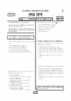

문제지


시험지를 먼저 풀어 보세요. 등급컷·표준점수·난이도는 흐리게 가려 뒀어요.
정답 변경 없음
이의신청 4문항 · 평가원 상세 답변 4문항
평가원 답변
이의를 제기한 분들은 공통적으로 <보기>를 참고로 할 때 (나)의 “우스워라 나의 영은 죽어 있는 것이 아니냐”가 ㉠‘생활의 안정 속에 빠져 있는 자신을 질책하고 그러한 상황을 이겨내기 위한 것’을 함축하는 말이지, 결코 ㉡‘일상에 매달려 살아가야 하는 자의 설움과 비애’를 함축하는 말이 아니라고 주장하고 있습니다. 하지만 이러한 주장은 정답지 ⑤번에 나오는 ‘함축하는’을 충분히 고려하지 못한 것입니다. ‘함축’은 사전적으로 ‘표현의 의미를 한 가지로 나타내지 아니하고 문맥을 통하여 여러 가지 뜻을 암시하거나 내포하는 일’(국립국어원, ꡔ표준국어대사전ꡕ 참조)을 뜻합니다. 따라서 “우스워라 나의 영은 죽어 있는 것이 아니냐”가 ㉠을 함축하기에 ㉡을 함축할 수 없다는 주장은 우선적으로 ‘함축’의 의미를 충분히 고려하지 못한 것입니다. 그러한 주장이 타당하려면 ㉠을 함축하고 있기에 ㉡을 함축할 수 없는 이유를 구체적으로 제시해야만 할 것입니다. 또한 이의를 제기한 분들은 ‘일상에 매달려 살아가야 하는 자의 설움과 비애’가 시인의 과거 생활(성북동에서의 생활)에 더 적합한 것이고, ｢사령｣과는 어울릴 수 없는 설명이므로 “우스워라 나의 영은 죽어 있는 것이 아니냐”가 ‘일상에 매달려 살아가야 하는 자의 설움과 비애’를 함축할 수 없다고 주장하고 있습니다. 하지만 이런 주장들은 <보기> 내용의 일부를 지나치게 단속적(斷續的)인 것으로 받아들여 (나)의 “우스워라 나의 영은 죽어 있는 것이 아니냐”가 함축할 수 있는 의미를 과거적인 것으로 한정한 나머지 ‘일상에 매달려 살아가야 하는 자의 설움과 비애’를 함축할 수 없다고 잘못 이해한 것입니다.(나)의 “우스워라 나의 영은 죽어 있는 것이 아니냐”가 함축하는 바는 <보기>의 ‘일상에 매달려 살아가야 하는 자의 설움과 비애’가 구체적으로 의미하는 바를 이상과 현실에 대한 시인의 문제의식과 관련지어 읽어내고, 이를 참고하여 (나)의 전반적인 의미 구조를 파악하면 이해할 수 있습니다. <보기>에서 ‘일상에 매달려 살아가야 하는 자의 설움과 비애’는 일상적인 생활에서 벗어나려는 시인의 의식, 즉 이상을 전제로 한 정서들입니다. 그런 만큼 ‘설움과 비애’는 시인이 이상과 현실(일상생활)을 문제 삼을 경우에 다시 현재화될 수 있습니다. 그 현재화의 가능성을 (나)는 잘 보여주고 있습니다. 시적 화자가 ‘자유’와 ‘자신의 영’을 대비시키면서 자신이 처한 상황을 성찰하고 있다는 점, 게다가 그러한 성찰이 첫 연과 끝 연의 수미상관을 고려할 정도로 구조적 안정감을 도모하는 가운데 이루어진 것이라는 점에서 (나)는 이상과 현실(일상생활)에 대한 시인의 문제의식을 충분히 반영한 것이라고 할 수 있습니다. 그러므로 (나)의 “우스워라 나의 영은 죽어 있는 것이 아니냐”는 ‘일상에 매달려 살아가야 하는 자의 설움과 비애’를 함축할 수 있습니다. 이러한 가능성은 (나)의 의미 구조와 어조 등을 고려할 때 더욱 커집니다. (나)에서 ‘자유’와 관련하여 자신을 돌아보면서 부끄러움을 느끼던 시적 화자가 자신이 처한 상황을 통해서 일상생활이 지닌 부정성을 강하게 부각시켜 내면서도, 다시 끝 연에서 자조감과 비애감이 서려 있는 어조를 들려주는 것은 그 좋은 증거입니다. 그만큼 그에게는 현실(일상생활)이 벗어나야 할 것이면서도 동시에 구속적인 것으로 인식되었던 것입니다. 이러한 맥락에서 볼 때, (나)의 “우스워라 나의 영은 죽어 있는 것이 아니냐”는 생활의 안정 속에 빠져 있는 자신을 질책하고 그러한 상황을 이겨내기 위한 자의 태도뿐 아니라 일상에 매달려 살아가야 하는 자의 설움과 비애 또한 함축하고 있습니다. 따라서 답지 ⑤는 적절한 반응입니다. 언어 영역
평가원 답변
33번 문항(홀수형)은 지문의 내용에 따라 답지에 주어진 다섯 개의 단어들에 부등호를 매겨, 부등호의 배열이 ‘<><>>’의 모양을 가지는 것을 찾는 문제입니다. 지문에 따라 답지의 단어들에 부등호를 매기면 다음과 같습니다. ① 가족: <><>> (개구도 06150) ② 다수: <><>③ 성질: <>><>>④ 승부: <>><>⑤ 우정: ><>> (개구도 4152)정답은 ‘① 가족’입니다. 문제를 제기한 사람들의 주장은 ‘⑤ 우정’도 부등호의 배열이 ‘<><>>’ 모양이 된다는 것입니다. 그러나 지문의 넷째 문단에 “음절 초에는 ‘ㅇ[ŋ]’을 제외한 대부분의 자음이 올 수 있지만”이라고 하여 음절 초에 ‘ㅇ[ŋ]’이 올 수 없음을 분명히 언급하였습니다. 국어 음절 말의 표기 ‘ㅇ’은 자음으로 발음이 [ŋ]이지만, 음절 초의 표기 ‘ㅇ’은 자음이 아니라 자리를 채우기 위한 기호일 뿐입니다. ‘우정’을 발음기호로 나타내면 [ŋuʤəŋ]이 아니라 [uʤəŋ]이 됩니다. 이것을 지문의 개구도에 따라 부등호로 표시하면 ‘><>>’이 됩니다. 언어 영역
평가원 답변
연철의 등장으로 흥겨웠던 극중 분위기는 불길한 징후를 띠기 시작합니다. 특히 연철의 첫 대사로 인해 기대감에 차 있던 극중 인물들은 분위기가 급변했음을 인지하게 됩니다. 그런 의미에서 연철의 첫 대사는 분위기를 반전시키는 결정적인 역할을 하게 됩니다. 연철은 임제순에 대해 심한 불만을 가진 사람입니다. 임제순이 등장한 이후에 갈등의 중심이 곰치와 임제순에게 집중되지만, 연철은 냉정하게 그 사태를 관망할 수만은 없습니다. “배를 묶다니?”라는 반응은 연철이 지니고 있는 심정적 반항심과 사태에 대한 관심을 보여주는 중요한 대사입니다.무대 위에는 일곱 명의 등장인물이 있습니다. 임제순이 등장한 이후에는 주로 임제순과 곰치가 대화하고 나머지 다섯 명은 이를 지켜보는 형국입니다. 그들이 어떠한 심리적 태도를 지닌 채 두 사람의 대화를 지켜보는지 파악할 수 있어야 합니다. 따라서 “배를 묶다니?”라는 대사는 지켜보는 이들의 심리상태를 알기 위해서 꼭 필요한 대사입니다. 더구나 성삼, 연철, 도삼이 한꺼번에 말하고 있다는 점을 감안하면, 이 대사는 많은 이들의 관심을 반영한 대사라고 할 수 있습니다.언어 영역
이의 요지
이의 제기는 다음 두 가지로 구분할 수 있습니다
평가원 답변
이의 제기는 다음 두 가지로 구분할 수 있습니다.1. 놀이동산 개발에 반대하는 주민들은 미래의 종합적인 손실을 예상하고 그러한 손실을 강조해야 할 것이기 때문에, 미래의 종합적인 손실을 현재 가치로 환산하여 그 손실을 강조하기 위해서는 가능한 한 할인율을 낮게 제시할 것이므로 ②번은 정답이 될 수 없다는 의견. 2. 지문의 결론 부분에서 “사회적 할인율이 적용되는 공공사업은 일반적으로 그 이익이 장기간에 걸쳐 서서히 나타난다. 이러한 점에서 공공사업은 미래 세대를 배려하는 지속 가능한 발전의 이념을 반영한다. 만일 사회적 할인율이 시장 이자율이나 민간 자본의 수익률처럼 높게 적용된다면, 미래 세대의 이익이 저평가되는 셈이다. 그러므로 사회적 할인율은 미래 세대를 배려하는 공익적 차원에서 결정되는 것이 바람직하다.”를 근거로 ⑤번에서 지역경제 활성화의 효과가 나타나는 시간은 길다고 판단되기 때문에 개발 사업에 대해서 낮은 할인율을 적용하는 것이 옳다는 의견. 이에 대한 답변은 다음과 같습니다.1. 환경의 가치를 중시한다면 놀이동산에 반대하는 의견을 가진 주민들일 가능성이 높습니다. 할인율 개념에 대한 지문 첫 단락의 설명에 따르면, 놀이동산 건설의 지역 경제 활성화가 가져올 이익에 높은 할인율을 적용해야 그 현재 가치가 작아지게 되므로 ②번이 정답입니다.2. 지문에서 ‘그 이익이 장기간에 걸쳐 서서히 나타난다’고 말한 것은 공공사업의 일반적 특징을 가리킨 것입니다. 그러나 <보기>의 놀이동산 개발은 사회적 할인율을 적용해야 하는 공공사업이 아닙니다. <보기>는 개발 업체, 사업 찬성 주민, 사업 반대 주민이라는 각 주체의 입장에서 할인율을 선택하는 상황입니다. ⑤번 답지는 지역경제 활성화에 대한 이익의 크기가 아니라 그 효과가 나타나는 데 걸리는 ‘시간’을 언급하고 있습니다. 지문의 첫 부분을 보면, 할인의 요인이 현재 시점으로부터 미래 시점까지의 ‘시간’에 대한 투자 기회, 물가 상승, 불확실성이라고 설명되어 있습니다. 즉 할인의 대상이 되는 가치가 현재 시점으로부터 멀어질수록 그러한 요인 또한 커지기 때문에 <보기>에 제시된 주체와는 상관없이 높은 할인율을 적용하는 것이 타당합니다.
시험 전체 관련 보도 4건은 2008학년도 대학수학능력시험 회차 페이지에 모아 두었어요.
발행 기관: 한국교육과정평가원(KICE). 파일 위치: 이 사이트가 보관한 사본. 저작권은 발행 기관에 있습니다. 원본과 다르거나 게시 중단이 필요하면 연락처로 알려 주세요. 등급컷 출처 구분은 데이터 원칙에서 설명합니다.